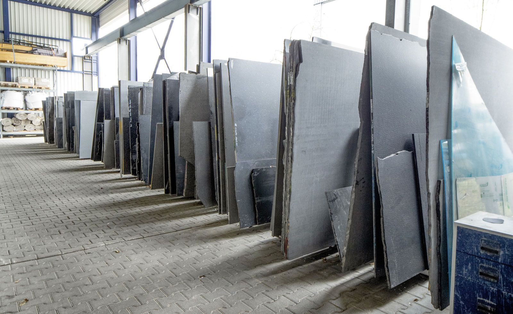
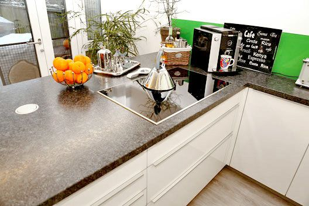
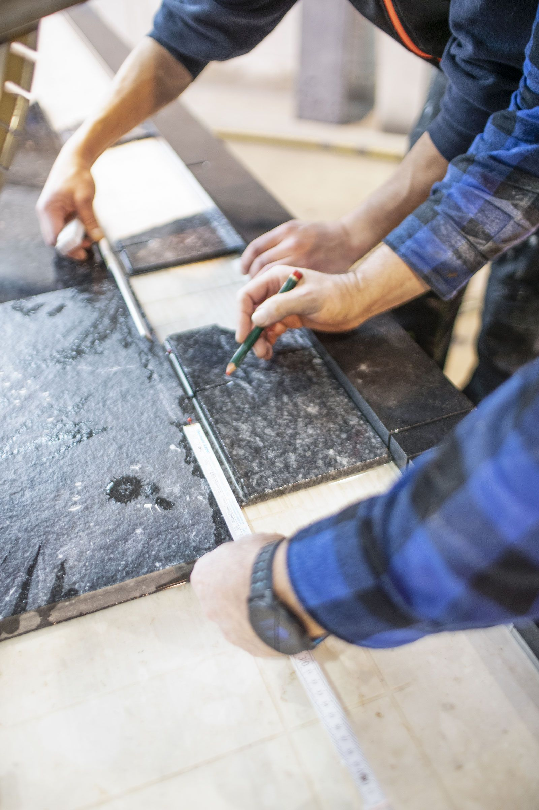

Natursteinplatten für innen und außen
Egal, ob im Innen- oder Außenbereich – Natursteinplatten überzeugen durch Langlebigkeit und eine individuelle, wandelbare Optik.
Von Terrassen über Wege und Treppen bis hin zu Arbeitsplatten und Waschtischen bietet Naturstein zahlreiche Gestaltungsmöglichkeiten für Ihren Wohnraum.
Ob Sie eine kühle, zeitlose Optik bevorzugen oder eine warme Atmosphäre schätzen, spielt dabei keine Rolle – je nach Material und Oberflächenbearbeitung können unsere Natursteinplatten unterschiedliche Wirkungen erzielen.
Steigern Sie das Ambiente Ihres Wohnbereiches und lassen Sie sich bei uns in Altbach beraten!


Wir bieten Ihnen Natursteinplatten aus aller Welt
Bei Eberhard Bäder Natursteine und Glas in der Nähe von Stuttgart erwarten Sie hochwertige Natursteinplatten für jeden Anspruch. Unsere Natursteine kommen aus aller Welt, insbesondere aus Indien, Afrika, Brasilien, Italien, Spanien und China. Nennen Sie uns Ihre Wünsche und Anforderungen – wir finden garantiert die passende Natursteinplatte für Sie!
Natursteine bestechen durch ihren individuellen Charakter: Kein Stein gleicht dem anderen in Zusammensetzung, Maserung und Färbung. Unsere Platten sind hitzeunempfindlich, robust und pflegeleicht und werden nicht zuletzt aufgrund ihrer zahlreichen Gestaltungsmöglichkeiten von unseren Kunden geschätzt.
Rufen Sie uns bei weiteren Fragen gerne an oder besuchen Sie unsere Ausstellung in Altbach, ganz in der Nähe von Stuttgart!
Vom Rohblock zur fertigen Platte


Diese Materialien haben wir im Sortiment
Alle Sorten können Sie vor Ort ansehen und reservieren. Bilder vieler Sorten finden Sie in unserer Bilddatenbank.
Dunkle Granitsteine
- Angola Schwarz
- Blue in the night
- Brown Antic
- China Impala
- Coffee Imperiale
- Emerald Pearl
- Impala
- Marinace
- Marinace Gold
- Matrix
- Mystic Grey
- Nero Assoluto
- Nero India
- Nero Marcos
- Nordic Sunset
- Padang Dunkel
- Silver Black
- Spectrolith
- Star Galaxy
- Steel Grey
- Virginia Black
Weiße Granitsteine
- Azul Aran
- Bethel White
- Bianco Kristall
- Bianco Sardo
- Imperial White
- Meera White
- Monte Rosa
- Serizzo
- Viscont White
Graue Granitsteine
- Azul California
- Basaltino
- Grigio Carnico
- Onsernone
- Padang hell
- Padang Kristall
- Padang Rosa
- Quarzit Silber
- Rosa Beta
- Super Grey
Grüne Granitsteine
- Ice Green
- Kashmir White
- Verde Maritaca
- Verde Oliva
- Verde Spluga
- Tropic Brown
- Verde Eucalyptus
Cremefarbige Granitsteine
- Jura Gelb-Kalkstein
Rote Granitsteine
- Aurora India
- Balmoral
- Multicolor Rot
- Rosa Porrinho
- Rosa Sardo
- Tan Brown
Blaue Granitsteine
- Azul Macaubas
- Azul Noce
- Azul Platino
- Baltic Blau
- Blue Eyes
- Fantastic Blue
- Labrador Antic
- Labrador Blue Pearl
- Labrador Hell
- Orissa Blue
- Vitzag Blue
Braune Granitsteine
- Baltic Braun
- Breccia Imperiale
- Coffestone
- Fox Brown
- Giallo Venezia
- Quarzit Brown
- Teak Stone
Bunte Granitsteine
- Belorizonte
- Incas Gold
- Ivory Brown
- Juparana Colombo
- Juparana India
- Kinawa
- Melur Melody
- Padang Gelb
- Paradiso
- Pegasus

Kantenprofile, Ausschnitte & Sonstiges
Kantenprofile
- Profil 1: Oberseite 1/4 Rundung, unten Fasen und Unterseite 50 mm Tiefe geschliffen
- Profil 2: Vorderseite 1/2 Rundung, unten Fasen und Unterseite 50 mm Tiefe geschliffen
- Profil 3: Vorderseite Buchrückenform und Unterseite 50 mm Tiefe geschliffen
- Profil 4: Oberseite 10 mm Fasen, unten Fasen und Unterseite 50 mm geschliffen
- Profil 5: Oberseite und Unterseite mit Fasen 3 mm und Unterseite 50 mm Tiefe geschliffen.
- Profil 6: Oberseite und Unterseite mit Rundung 3 mm und Unterseite 50 mm Tiefe geschliffen.
- Profil 9: Schürzenprofil auf Gehrung verklebt, oben und unten gefast oder gerundet.
- Profil Stratos: Oben und unten gefast und poliert, unten ist ein eloxiertes Aluprofil angeklebt.
Mögliche Ausschnitte
- Viereck gesägt für Auflageteile; Viereck flächenbündige Teile; Viereck für Unterbauteile
- Softeck gesägt für Auflageteile; Softeck flächenbündige Teile; Softeck für Unterbauteile
- Rund gesägt für Auflageteile; Rund flächenbündige Teile; Rund für Unterbauteile
- Eckspülenausschnitt gesägt für Aufbauteile; Eckspülenausschnitt für flächenbündige Teile
- Ovalausschnitt gesägt für Auflageteile; Ovalausschnitt für Unterbauteile
- Ablaufrillen ca. 400 x 10 mm
Sonstiges
Wandabschlussprofile in einer Höhe von 30 bis 100 mm und einer Stärke von 12 mm nach Kundenwunsch.
Lassen Sie sich beraten
Besuchen Sie unsere Ausstellung in Altbach oder rufen Sie uns an – wir beraten Sie gerne persönlich.